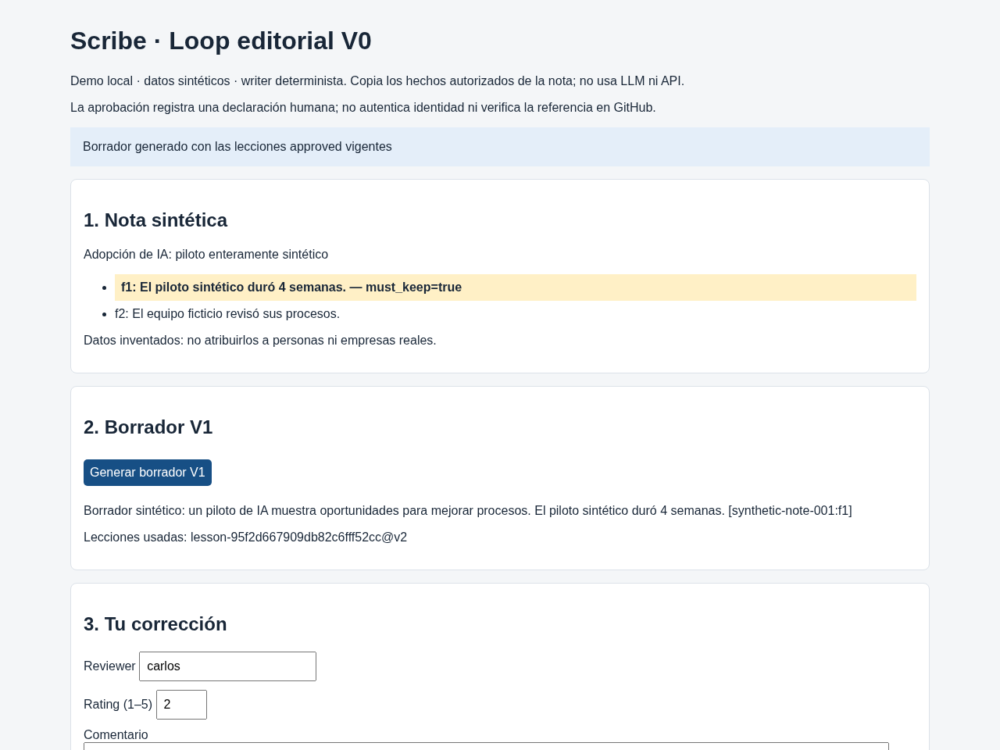
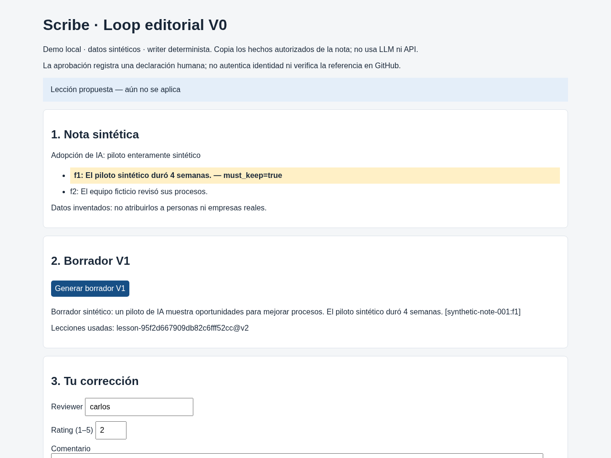
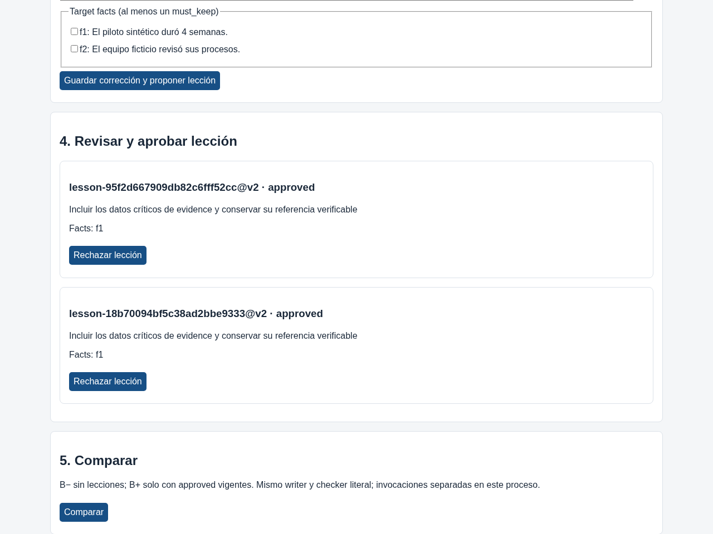
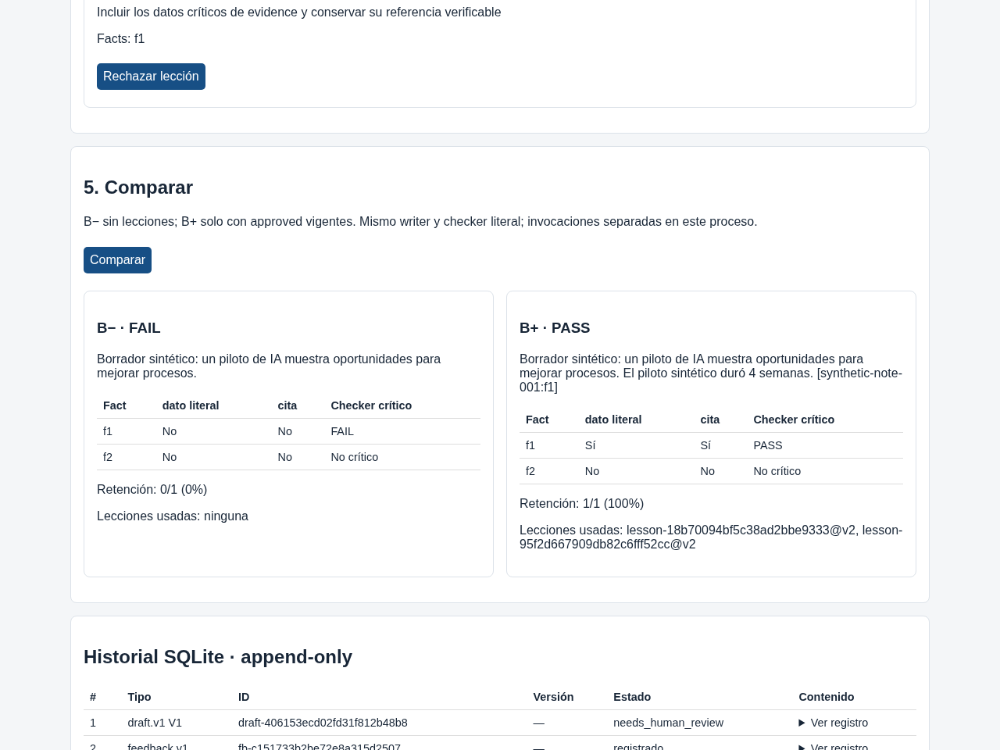

B− · FAIL
Borrador sintético: un piloto de IA muestra oportunidades para mejorar procesos.
| Fact | dato literal | cita | Checker crítico |
|---|---|---|---|
| f1 | No | No | FAIL |
| f2 | No | No | No crítico |
Retención: 0/1 (0%)
Lecciones usadas: ninguna
Proyecto creado en el RSI Hackathon Kavak × OpenAI × Primero AI · 9 nov 2026, CDMX
Una corrección humana se convierte en una lección aprobada que el agente siguiente usa — sin reentrenar.
Qué es (3 líneas).
Adopción de IA: piloto enteramente sintético
Datos inventados: no atribuirlos a personas ni empresas reales.
Borrador sintético: un piloto de IA muestra oportunidades para mejorar procesos.
Lecciones usadas: ninguna · session web-b8c9a807e0a449ea908964f233ad9391

Reviewer: fixture_simulated · rating 2/5 · target f1
«Omitiste la duración del piloto sintético.»
Corrección pedida: conservar «4 semanas» y citar f1. No se atribuye a una persona real.

Lección lesson-8598acb82856e681bb0deeac@v1 → estado approved.
Aprobada por fixture_simulated · ref fixture:demo-control. La UI local pide declaración humana; esta página usa el gate de la demo.

B− sin lecciones → FAIL. B+ con lección approved → PASS.
Leyenda del diff: Verde: texto agregado en B+ respecto a B−. Rojo: texto de B− eliminado o sustituido en B+. Si B− solo omite un dato, se resalta su incorporación en verde en B+; no hay texto que marcar en rojo en B−. Es un diff de texto del borrador, no un juicio del checker.
Borrador sintético: un piloto de IA muestra oportunidades para mejorar procesos.
| Fact | dato literal | cita | Checker crítico |
|---|---|---|---|
| f1 | No | No | FAIL |
| f2 | No | No | No crítico |
Retención: 0/1 (0%)
Lecciones usadas: ninguna
Borrador sintético: un piloto de IA muestra oportunidades para mejorar procesos. El piloto sintético duró 4 semanas. [synthetic-note-001:f1]
| Fact | dato literal | cita | Checker crítico |
|---|---|---|---|
| f1 | Sí | Sí | PASS |
| f2 | No | No | No crítico |
Retención: 1/1 (100%)
Lecciones usadas: lesson-8598acb82856e681bb0deeac@v2

Resultado honesto. Esta demo usa fixtures sintéticos y un writer determinista en el recorrido estático. La corrida Codex en vivo del hackathon fue N=1 por rama. El checker es literal + cita; una paráfrasis puede fallar. Nada se publica solo a LinkedIn u otra red: la publicación la hace una persona.